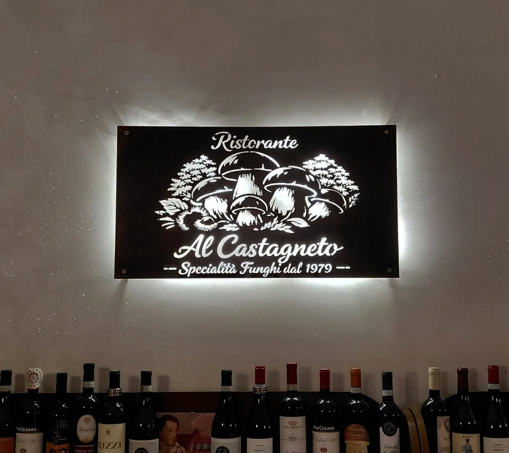
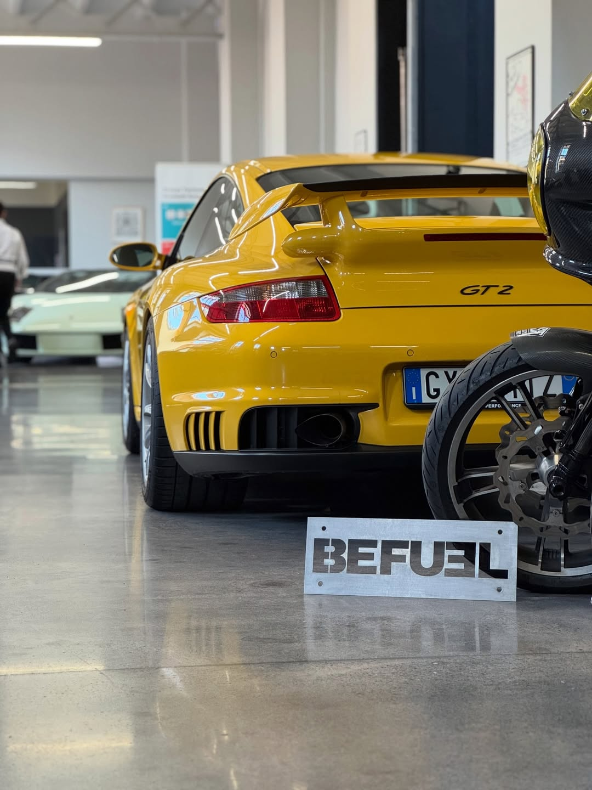
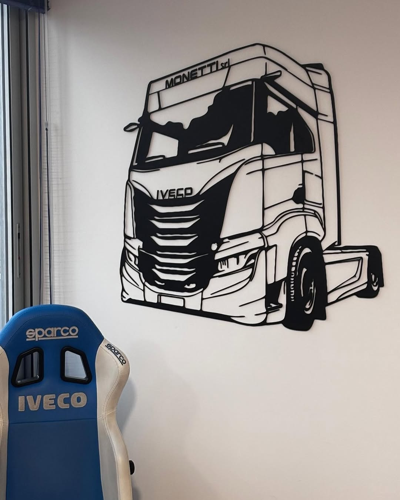
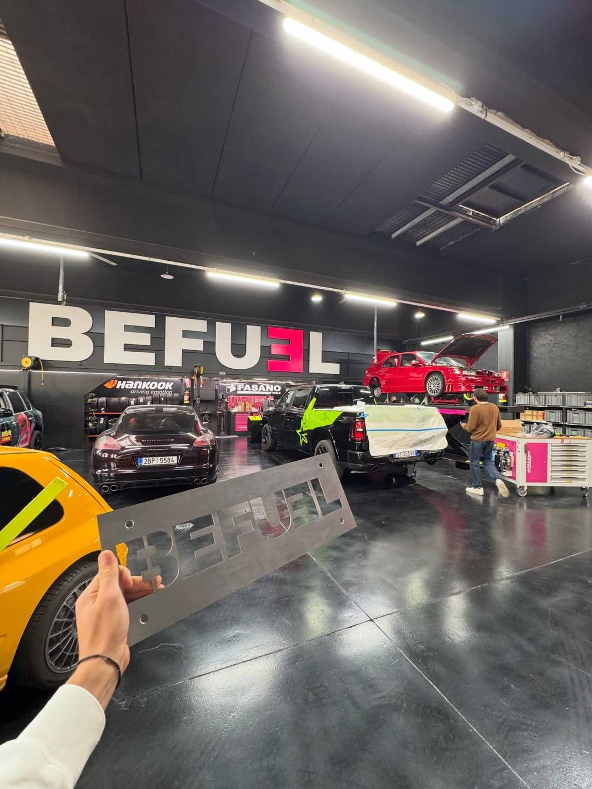
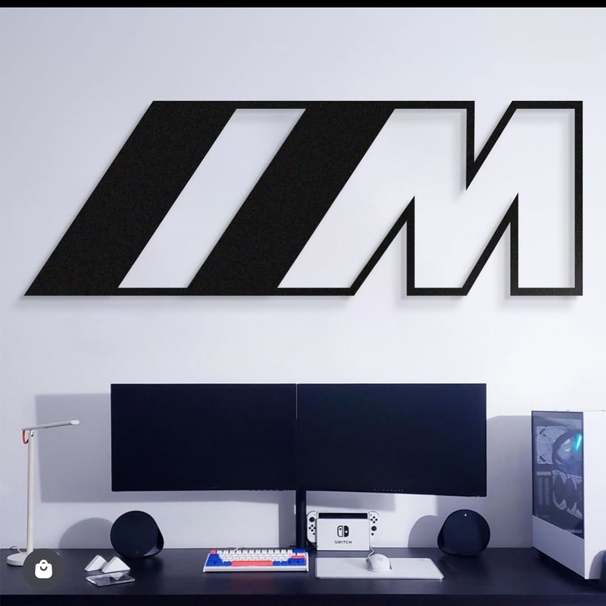
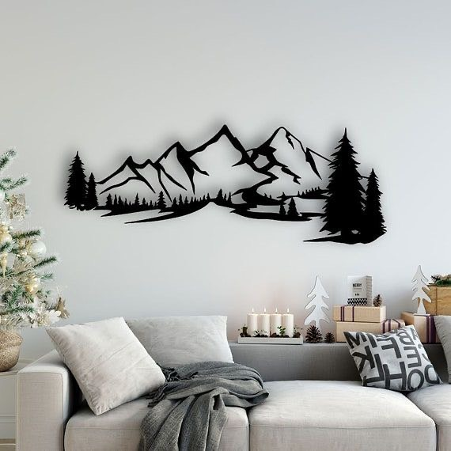
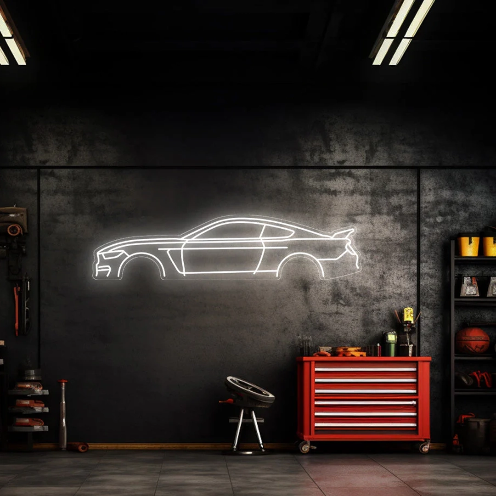
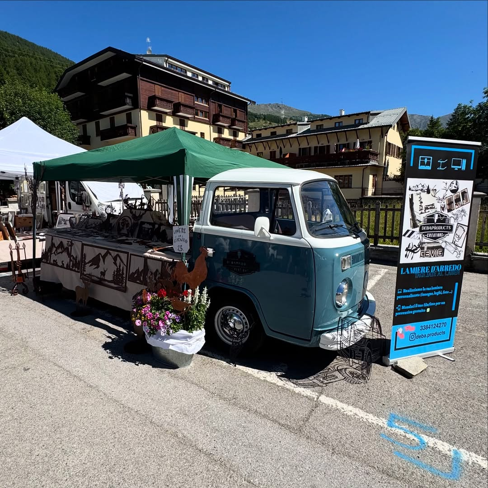
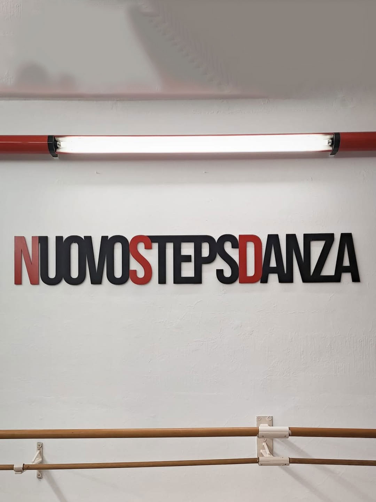

Galleria
Lasciamo parlare
i pezzi







Taglio Laser & Design Vettoriale
Nata per gioco, diventata arte. Ogni pezzo parte da un file disegnato a mano su Illustrator e si trasforma in acciaio attraverso il taglio laser.
Come è iniziata
Tutto è partito per gioco: qualche amico, la passione per le auto e la voglia di decorare i nostri garage con qualcosa di unico. Le prime silhouette erano semplicemente quelle delle auto che amavamo di più.
Il passaparola ha fatto il resto. Amici di amici iniziavano a chiedere una lamiera personalizzata, finché quello che era un hobby è diventato un progetto vero e proprio — con una identità, un processo e una qualità riconoscibile.
Disegno vettoriale
Ogni file viene costruito da zero su Adobe Illustrator, con precisione chirurgica per garantire un taglio pulito.
Preparazione file macchina
Il vettoriale viene ottimizzato e convertito nel formato richiesto dalla macchina da taglio laser.
Taglio laser su lamiera
La lamiera in ferro viene tagliata con precisione millimetrica. Il risultato è netto, pulito, pronto da montare.
Cosa realizziamo

Le origini del progetto. BMW, auto da corsa, vetture iconiche — le silhouette che hanno decorato i nostri garage prima di tutto il resto.

Silhouette di profili alpini, perfette per abitazioni montane. Grandi formati da parete che portano il paesaggio dentro casa.

Grandi lamiere personalizzate con il logo del locale, da appendere sui muri come elemento di design. Impatto visivo immediato.
Galleria






Hai un'idea?
Che sia una silhouette personalizzata, un logo per il tuo locale o un pezzo decorativo su misura — costruiamo tutto a partire dalla tua idea.
Parliamone